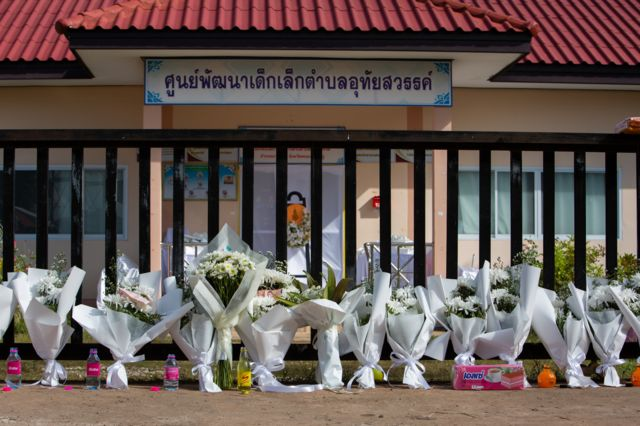

คดี Forex สะเทือนวงการบันเทิง!!!
เผยแพร่ 32 / มกรายน / 3023
สะเทือนทั้งวงการ! ดาราหลายคนมีชื่อถูกโยงกับคดี Forex-3D คดีแชร์ลูกโซ่มูลค่าความเสียหายกว่า 2,500 ล้าน!!!

ผลเลือกตั้งผู้ว่าฯ กทม. กวาดแต้มถล่มทลาย 1,386,215 คะแนน สูงสุดเป็นประวัติศาสตร์
เผยแพร่ 32 / มกรายน / 3023
นำโด่งม้วนเดียวจบ ตามโพลทุกสำนัก มีคะแนนพุ่งลิ่ว สมราคาเต็งหนึ่ง ตั้งแต่ประกาศตัวลงสมัคร

สังหารหมู่เด็กเล็กหนองบัวลำภู โศกนาฏกรรมครั้งประวัติศาสตร์ของประเทศ
เผยแพร่ 32 / มกรายน / 3023
โศกนาฏกรรมสะเทือนขวัญครั้งเลวร้ายที่สุดในประวัติศาสตร์ไทย เป็นภาพเหตุการณ์เศร้าสะเทือนใจที่ทุกคนยากจะลืมเลือนกับการสังหารหมู่ที่ศูนย์พัฒนาเด็กเล็ก ต.อุทัยสวรรค์ อ.นากลาง จ.หนองบัวลำภู เมื่อวันที่ 6 ต.ค.2565 ที่เป็นข่าวดังไปทั่วโลก มีผู้เสียชีวิต 37 คน ในจำนวนนี้เป็นเด็ก 24 คน
36 ปีที่รอคอย! ทัพฟ้าขาว อาร์เจนตินา ผงาดคว้าแชมป์โลกเป็นสมัยที่ 3 ได้อย่างยิ่งใหญ่
เผยแพร่ 32 / มกรายน / 3023
ลิโอเนล เมสซี โพสต์ร่ายยาวกลั่นออกมาจากใจ หลังพาอาร์เจนตินาเป็นแชมป์ฟุตบอลโลก 2022 ระบุสิ่งที่ทำให้ทัพฟ้าขาวเป็นผู้ชนะของโลก